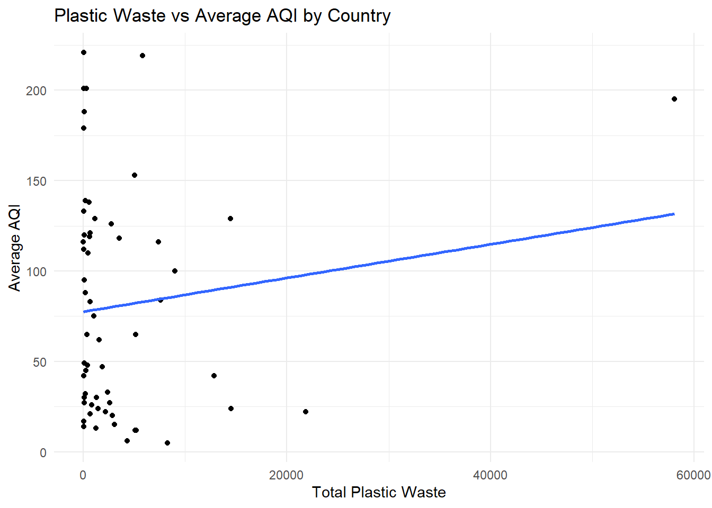
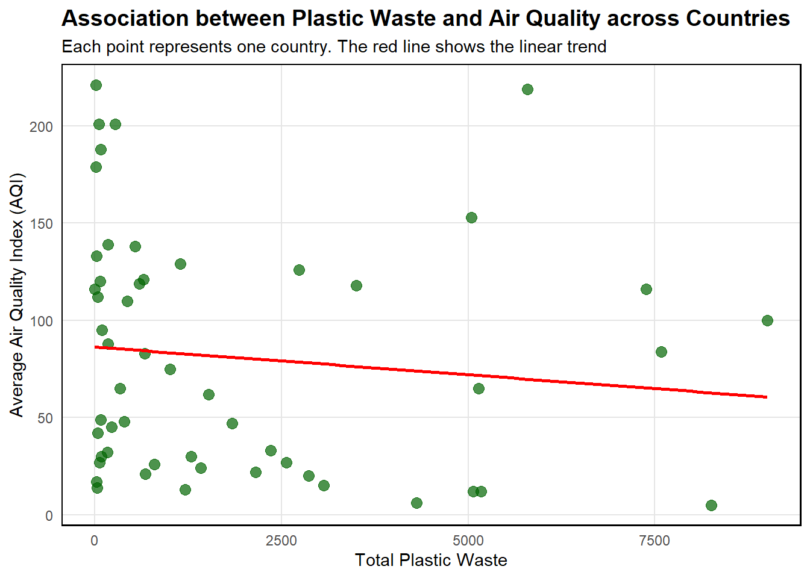
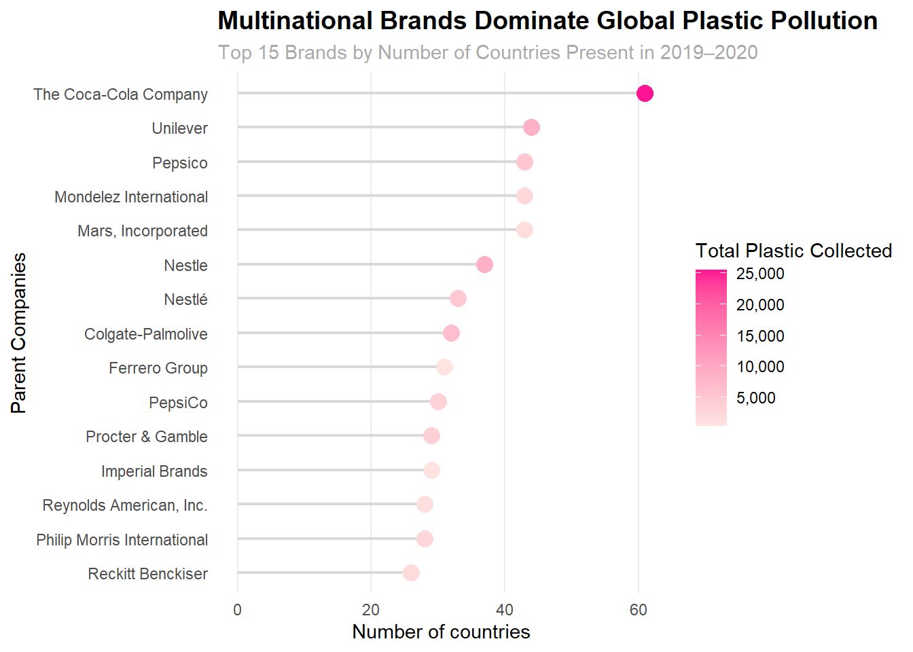

library(httr)
library(tidyjson)
library(jsonlite)
library(tidyverse)
library(gt)
library(glue)
library(purrr)
library(tidyr)
library(readr)
library(hexbin)
library(ggplot2)Report
Introduction
This Plastic Waste dataset is provided by Break Free From Plastic. Sarah Sauve was volunteering for her local Zero Waste Action Team when one of her colleagues proposed a local brand audit in St. Johns to contribute to the global audit as well as a larger project that was about understanding the sources of plastic in their city. She then used the 2019 and 2020 global audit data online and did some data cleaning and wrangling to better understand the global plastic pollution issue. User jonthegeek then used the same raw data prepped the data set in his own way.
Here is a snippet of the data set:
plastics <- read.csv("C:/Users/sansk/Downloads/cal poly/sophomore year/spring 2026/STAT 431/Plastic-Waste-Analysis/plastics.csv")
head(plastics) country year parent_company empty hdpe ldpe o pet pp ps pvc
1 Argentina 2019 Grand Total 0 215 55 607 1376 281 116 18
2 Argentina 2019 Unbranded 0 155 50 532 848 122 114 17
3 Argentina 2019 The Coca-Cola Company 0 0 0 0 222 35 0 0
4 Argentina 2019 Secco 0 0 0 0 39 4 0 0
5 Argentina 2019 Doble Cola 0 0 0 0 38 0 0 0
6 Argentina 2019 Pritty 0 0 0 0 22 7 0 0
grand_total num_events volunteers
1 2668 4 243
2 1838 4 243
3 257 4 243
4 43 4 243
5 38 4 243
6 29 4 243Data from both 2019 and 2020 is included. This data was measured through volunteers physically collecting pieces of plastic and recording the type of plastic and company label. The observational unit here is one brand/company audited in one country in one year, described by the following variables:
- country: where the brand audit was conducted
- year: year of the audit, 2019 or 2020
- parent company: The company whose plastic waste was counted. “Unbranded” represents plastic without a known or identifiable brand.
- empty: number of unlabeled pieces of plastic
- hdpe: number of High-Density Polyethylene pieces
- ldpe: number of Low-Density Polyethylene pieces
- o: number of “other” types of plastic pieces that don’t fall into the other categories
- pet: number of Polyethylene Terephthalate pieces
- pp: number of Polypropylene pieces
- ps: number of Polystyrene pieces
- pvc: number of Polyvinyl Chloride pieces
- grand total: the total count of plastic pieces across all types for that country/brand/year audit
- num_events: the number of clean-up events held
- volunteers: the number of volunteers who participated in the audit
Data Cleaning
jonthegeek used janitor to clean the data. He…
- used janitor::clean_names() to standardize the column names without changing them manually,
- converted grand_total into a character to deal with the commas that were included in the numbers and then removed the commas,
- used set_names() and map_dfr() to with the .id argument to create the country column,
- dropped duplicate pp and ps columns using select(), and
- added a year column using rbind() to combine the 2019 and 2020 data into one data set.
Explorations
RQ 1: Does plastic type composition vary systematically by region?
Differences in PET vs. HDPE vs. PP across regions could reflect underlying patterns in local markets and waste infrastructure.
RQ 2: Do the same big brands keep showing up together in the same countries?
Major, multi-national brands like Coca-Cola and Nestle appear across almost all countries. However, if they consistently cluster within the same countries, it could suggest that some markets are hot spots for plastic pollution, and spark the conversation of why that would be.
Visualizations


Checkpoint 2
How do two brands compare in terms of their global reach, and how similar are their distributions of plastic waste across countries?
compare_brands <- function(brand1, brand2) {
b1 <- plastics %>%
filter(parent_company == brand1) %>%
group_by(country) %>%
summarize(count1 = sum(grand_total, na.rm = TRUE), .groups = "drop")
b2 <- plastics %>%
filter(parent_company == brand2) %>%
group_by(country) %>%
summarize(count2 = sum(grand_total, na.rm = TRUE), .groups = "drop")
combined <- full_join(b1, b2, by = "country") %>%
mutate(
count1 = replace_na(count1, 0),
count2 = replace_na(count2, 0))
tibble(
brand1 = brand1,
brand2 = brand2,
countries_brand1 = n_distinct(b1$country),
countries_brand2 = n_distinct(b2$country),
correlation = cor(combined$count1, combined$count2)
)
}
compare_brands("The Coca-Cola Company", "PepsiCo")# A tibble: 1 × 5
brand1 brand2 countries_brand1 countries_brand2 correlation
<chr> <chr> <int> <int> <dbl>
1 The Coca-Cola Company PepsiCo 61 30 0.360Notes: The function takes in two brands as inputs and filters the dataset separately for each one. It then groups the data by country and calculates the total plastic associated with each brand in each country. The two datasets are combined so that both brands’ values are grouped by country, and missing values are replaced with 0 to show that they weren’t there. The function calculates the number of countries each brand appears in and computes a correlation coefficient to measure how similarly the two brands are distributed across countries. The Coca-Cola Company and PepsiCo had a correlation coefficient of .3598, showing that there is a weak correlation in how their plastic waste is distributed across countries.
Plastic diversity index per country
plastic_types <- c("pet", "hdpe", "ldpe", "pp", "ps", "pvc", "o", "empty")
plastics %>%
group_by(country) %>%
summarise(across(c(pet, hdpe, ldpe, pp, ps, pvc, o, empty), sum, na.rm = TRUE)) %>%
rowwise() %>%
mutate(diversity = {
counts <- c_across(c(pet, hdpe, ldpe, pp, ps, pvc, o, empty))
props <- counts / sum(counts)
props <- props[props > 0]
-sum(props * log(props))
}) %>%
select(country, diversity) %>%
arrange(desc(diversity))Warning: There was 1 warning in `summarise()`.
ℹ In argument: `across(c(pet, hdpe, ldpe, pp, ps, pvc, o, empty), sum, na.rm =
TRUE)`.
ℹ In group 1: `country = "Argentina"`.
Caused by warning:
! The `...` argument of `across()` is deprecated as of dplyr 1.1.0.
Supply arguments directly to `.fns` through an anonymous function instead.
# Previously
across(a:b, mean, na.rm = TRUE)
# Now
across(a:b, \(x) mean(x, na.rm = TRUE))# A tibble: 69 × 2
# Rowwise:
country diversity
<chr> <dbl>
1 United Kingdom of Great Britain & Northern Ireland 1.74
2 Sri Lanka 1.74
3 Mexico 1.71
4 Indonesia 1.66
5 Canada 1.65
6 Chile 1.61
7 Tunisia 1.59
8 Bulgaria 1.56
9 Argentina 1.55
10 United States of America 1.52
# ℹ 59 more rowsI computed a plastic type diversity index for each country, which measures how evenly plastic waste is spread across the 8 plastic types in the dataset. A higher score means many plastic types were found in roughly equal amounts, while a lower score means one or two types dominated. The United Kingdom ranked highest with a score of 1.74, meaning its plastic waste was spread relatively evenly across many material types. Countries with lower scores tended to be dominated by PET, which makes sense given that plastic beverage bottles are one of the most commonly collected items in brand audits.
Plastic pollution score per company
recycle_weights <- c(pet=1, hdpe=2, pp=2, ldpe=3, o=4, ps=5, pvc=5)
company_pollution_score <- function(company) {
plastics |>
filter(!parent_company %in% c("Grand Total", "Unbranded", "null", "NULL"),
parent_company == company) |>
mutate(pollution_score = hdpe*2 + ldpe*3 + pet*1 +
pp*2 + ps*5 + pvc*5 + o*4) |>
summarize(
parent_company = company,
total_score = sum(pollution_score, na.rm = TRUE),
total_plastic = sum(grand_total, na.rm = TRUE),
avg_score_per_piece = total_score / total_plastic)
}
top_companies <- plastics |>
filter(!parent_company %in% c("Grand Total", "Unbranded", "null", "NULL")) |>
group_by(parent_company) |>
summarize(total = sum(grand_total, na.rm = TRUE)) |>
slice_max(total, n = 10) |>
pull(parent_company)
map(top_companies, company_pollution_score) |>
bind_rows() |>
arrange(desc(total_score)) |>
gt::gt()| parent_company | total_score | total_plastic | avg_score_per_piece |
|---|---|---|---|
| The Coca-Cola Company | 28749 | 25530 | 1.1260870 |
| Unilever | 24077 | 8589 | 2.8032367 |
| Universal Robina Corporation | 20733 | 8651 | 2.3966015 |
| Nestle | 19711 | 8642 | 2.2808378 |
| La Doo | 15221 | 15221 | 1.0000000 |
| Colgate-Palmolive | 14373 | 6545 | 2.1960275 |
| Pepsico | 8663 | 5155 | 1.6805044 |
| Barna | 6225 | 6225 | 1.0000000 |
| Pure Water, Inc. | 1001 | 5347 | 0.1872078 |
| Assorted | 0 | 6101 | 0.0000000 |
Notes: I created pollution_score column by multiplying each plastic type’s count by a recycling difficulty weight. I wrote a custom function company_pollution_score() that takes a company name as input, applies the weights, and returns the total score, total plastic count, and average score per piece. I used map() to iterate this function over the top 10 companies by total plastic and combined the results with bind_rows().
With this data, the ranking of companies changes depending on total_score or average score per piece. The Coca-Cola Company has the highest total score due to sheer volume, but a relatively low average score per piece of 1.13. In contrast, Unilever has a higher average score per piece, meaning the plastic they produce is harder to recycle even if their total volume is lower.
Plastic type trend over time
plastic_type <- c("hdpe", "ldpe", "o", "pet", "pp", "ps", "pvc")
results <- map_dfr(plastic_type, function(p){
plastics %>% group_by(country, year) %>%
summarize(
total_plastic_per_year_country = sum(grand_total, na.rm = TRUE),
type_count = sum(.data[[p]], na.rm = TRUE),
.groups = "drop") %>%
mutate(
plastic_type = p,
proportion = type_count / total_plastic_per_year_country)})
results# A tibble: 749 × 6
country year total_plastic_per_year_…¹ type_count plastic_type proportion
<chr> <int> <int> <int> <chr> <dbl>
1 Argentina 2019 5336 430 hdpe 0.0806
2 Argentina 2020 1086 132 hdpe 0.122
3 Armenia 2020 8 0 hdpe 0
4 Australia 2019 6 0 hdpe 0
5 Australia 2020 1668 33 hdpe 0.0198
6 Bangladesh 2019 32 0 hdpe 0
7 Bangladesh 2020 2383 376 hdpe 0.158
8 Benin 2019 9976 0 hdpe 0
9 Benin 2020 342 0 hdpe 0
10 Bhutan 2019 7000 0 hdpe 0
# ℹ 739 more rows
# ℹ abbreviated name: ¹total_plastic_per_year_countryresults <- results %>%
select(country, year, total_plastic_per_year_country, plastic_type, proportion) %>%
pivot_wider(
names_from = plastic_type,
values_from = proportion
)
results %>%
mutate(across(-c(country, year, total_plastic_per_year_country), ~ round(.x, 3)))# A tibble: 107 × 10
country year total_plastic_per_year…¹ hdpe ldpe o pet pp ps
<chr> <int> <int> <dbl> <dbl> <dbl> <dbl> <dbl> <dbl>
1 Argentina 2019 5336 0.081 0.021 0.228 0.516 0.105 0.043
2 Argentina 2020 1086 0.122 0.13 0.195 0.133 0.242 0.057
3 Armenia 2020 8 0 0 0 1 0 0
4 Australia 2019 6 0 0 0 1 0 0
5 Australia 2020 1668 0.02 0.133 0.538 0.085 0.216 0.002
6 Bangladesh 2019 32 0 0 1 0 0 0
7 Bangladesh 2020 2383 0.158 0.001 0.654 0.125 0.037 0.024
8 Benin 2019 9976 0 0 0 1 0 0
9 Benin 2020 342 0 0 0 1 0 0
10 Bhutan 2019 7000 0 0 0 1 0 0
# ℹ 97 more rows
# ℹ abbreviated name: ¹total_plastic_per_year_country
# ℹ 1 more variable: pvc <dbl>results# A tibble: 107 × 10
country year total_plastic_per_year_…¹ hdpe ldpe o pet pp
<chr> <int> <int> <dbl> <dbl> <dbl> <dbl> <dbl>
1 Argentina 2019 5336 0.0806 2.06e-2 0.228 0.516 0.105
2 Argentina 2020 1086 0.122 1.30e-1 0.195 0.133 0.242
3 Armenia 2020 8 0 0 0 1 0
4 Australia 2019 6 0 0 0 1 0
5 Australia 2020 1668 0.0198 1.33e-1 0.538 0.0845 0.216
6 Bangladesh 2019 32 0 0 1 0 0
7 Bangladesh 2020 2383 0.158 8.39e-4 0.654 0.125 0.0373
8 Benin 2019 9976 0 0 0 1 0
9 Benin 2020 342 0 0 0 1 0
10 Bhutan 2019 7000 0 0 0 1 0
# ℹ 97 more rows
# ℹ abbreviated name: ¹total_plastic_per_year_country
# ℹ 2 more variables: ps <dbl>, pvc <dbl>Notes: I grouped the data by country and year, summed the total plastic and the total of plastic type, and then calculated proportions. I used map() to iterate through each plastic type and combined the results, then reshaped the data to compare types side by side.
Through this data, I can see that for each country and year, a few specific plastic types make up most of the total plastic waste, rather than contributing equally. For example, in Armenia in 2020, the plastic type pet made up all of the country’s plastic waste
Checkpoint 3
New data: Country Capitals
Description: This data contains geographical information for countries and their capital cities worldwide. It includes the country name, country code, capital city name, and the latitude and longitude coordinates of each capital. We will use this data as a bridge dataset to connect our plastic pollution data to the air quality API, which requires geographic cooordinates as input.
Here’s a snippet of the data set:
country_data <- read_csv("concap.csv")Rows: 245 Columns: 6
── Column specification ────────────────────────────────────────────────────────
Delimiter: ","
chr (4): CountryName, CapitalName, CountryCode, ContinentName
dbl (2): CapitalLatitude, CapitalLongitude
ℹ Use `spec()` to retrieve the full column specification for this data.
ℹ Specify the column types or set `show_col_types = FALSE` to quiet this message.head(country_data)# A tibble: 6 × 6
CountryName CapitalName CapitalLatitude CapitalLongitude CountryCode
<chr> <chr> <dbl> <dbl> <chr>
1 Somaliland Hargeisa 9.55 44.0 NULL
2 South Georgia and So… King Edwar… -54.3 -36.5 GS
3 French Southern and … Port-aux-F… -49.4 70.2 TF
4 Palestine Jerusalem 31.8 35.2 PS
5 Aland Islands Mariehamn 60.1 19.9 AX
6 Nauru Yaren -0.548 167. NR
# ℹ 1 more variable: ContinentName <chr>Below, we remove the unnecessary columns, keeping the country, capital, and coordinates columns, and then combine the new data with our existing Plastic Waste data set.
capitals <- country_data |>
select(c(1:4)) |>
rename("country" = "CountryName",
"capital_city" = "CapitalName",
"capital_lat" = "CapitalLatitude",
"capital_long" = "CapitalLongitude"
)
pollution_data <- left_join(plastics, capitals, by = "country")New Data: Air Quality API
Description: This dataset was acquired using the API Ninjas Air Quality API and returns current air quality measurements for a given latitude and longitude. For each country’s capital city, the API returned measurements for several pollutants including CO, NO2, O3, PM2.5, PM10, and SO2, as well as an overall AQI (Air Quality Index) score. With this data, we can investigate whether countries with higher levels of plastic pollution also tend to have worse air quality, potentially reflecting broader environmental mismanagement.
We made a custom function get_air_quality() that pulls air quality data for a city from the API using its latitude and longitude coordinates. We then used the map() function to iterate over each capital city from the Capital Cities data set from above.
# function to pull data from API
get_air_quality <- function(lat, lon) {
base_url <- "https://api.api-ninjas.com/v1/airquality"
my_url <- glue("{base_url}?lat={lat}&lon={lon}")
my_city <- GET(
my_url,
add_headers("X-Api-Key" = api_key)
)
# Check for successful response
if (status_code(my_city) != 200) return(NA)
my_data <- fromJSON(rawToChar(my_city$content))
return (my_data)
}
# to prevent crashing in case of failed API value
safe_air_quality <- possibly(get_air_quality, otherwise = NA)
# iterate function for all capital cities
unique_capitals <- pollution_data |>
distinct(country, capital_lat, capital_long) |>
filter(!is.na(capital_lat), !is.na(capital_long))
# create tibble of air quality data
air_data <- unique_capitals |>
mutate(
air_quality = map2(capital_lat, capital_long, safe_air_quality)
) |>
unnest_wider(air_quality)
# separate list objects into "pollutant"_concentration" and "pollutant"_aqi columns
air_data <- air_data |>
unnest_wider(CO, names_sep = "_") |>
unnest_wider(NO2, names_sep = "_") |>
unnest_wider(O3, names_sep = "_") |>
unnest_wider(PM10, names_sep = "_") |>
unnest_wider(`PM2.5`, names_sep = "_") |>
unnest_wider(SO2, names_sep = "_") |>
select(-capital_lat, -capital_long)
# create .csv file for air_data
write_csv(air_data, "air_data.csv")# read in air_data
air_data <- read_csv(file = "air_data.csv")Rows: 61 Columns: 14
── Column specification ────────────────────────────────────────────────────────
Delimiter: ","
chr (1): country
dbl (13): CO_concentration, CO_aqi, NO2_concentration, NO2_aqi, O3_concentra...
ℹ Use `spec()` to retrieve the full column specification for this data.
ℹ Specify the column types or set `show_col_types = FALSE` to quiet this message.# combine
pollution_data <- left_join(pollution_data, air_data, by = "country")
head(pollution_data) country year parent_company empty hdpe ldpe o pet pp ps pvc
1 Argentina 2019 Grand Total 0 215 55 607 1376 281 116 18
2 Argentina 2019 Unbranded 0 155 50 532 848 122 114 17
3 Argentina 2019 The Coca-Cola Company 0 0 0 0 222 35 0 0
4 Argentina 2019 Secco 0 0 0 0 39 4 0 0
5 Argentina 2019 Doble Cola 0 0 0 0 38 0 0 0
6 Argentina 2019 Pritty 0 0 0 0 22 7 0 0
grand_total num_events volunteers capital_city capital_lat capital_long
1 2668 4 243 Buenos Aires -34.58333 -58.66667
2 1838 4 243 Buenos Aires -34.58333 -58.66667
3 257 4 243 Buenos Aires -34.58333 -58.66667
4 43 4 243 Buenos Aires -34.58333 -58.66667
5 38 4 243 Buenos Aires -34.58333 -58.66667
6 29 4 243 Buenos Aires -34.58333 -58.66667
CO_concentration CO_aqi NO2_concentration NO2_aqi O3_concentration O3_aqi
1 147.69 1 2.64 3 28.52 24
2 147.69 1 2.64 3 28.52 24
3 147.69 1 2.64 3 28.52 24
4 147.69 1 2.64 3 28.52 24
5 147.69 1 2.64 3 28.52 24
6 147.69 1 2.64 3 28.52 24
SO2_concentration SO2_aqi PM2.5_concentration PM2.5_aqi PM10_concentration
1 0.11 0 4.71 15 6.65
2 0.11 0 4.71 15 6.65
3 0.11 0 4.71 15 6.65
4 0.11 0 4.71 15 6.65
5 0.11 0 4.71 15 6.65
6 0.11 0 4.71 15 6.65
PM10_aqi overall_aqi
1 6 24
2 6 24
3 6 24
4 6 24
5 6 24
6 6 24Summary 1
** Description: ** We want to investigate whether countries with more plastic pollution also tend to have worse air quality. We grouped the meta dataset by country and computed the total plastic collected and average overall AQI score for each country. The table displays the top 10 countries by total plastic collected along with their corresponding air quality index, where a higher AQI indicates worse air quality. This allows us to see whether the most plastic-polluted countries also tend to have a poorer air quality.
air_vs_plastic <- pollution_data |>
filter(!parent_company %in% c("Grand Total", "Unbranded", "null", "NULL")) |>
group_by(country) |>
summarize(
total_plastic = sum(grand_total, na.rm = TRUE),
total_volunteers = sum(volunteers, na.rm = TRUE),
avg_aqi = mean(overall_aqi, na.rm = TRUE)) |>
filter(!is.na(avg_aqi), total_plastic > 0) |>
arrange(desc(total_plastic))
air_vs_plastic |>
slice_max(total_plastic, n = 10)# A tibble: 10 × 4
country total_plastic total_volunteers avg_aqi
<chr> <int> <int> <dbl>
1 Philippines 58094 2767429 195
2 Nigeria 21834 698967 22
3 Kenya 14522 184128 24
4 India 14478 140354 129
5 Indonesia 12843 4457364 42
6 Vietnam 9007 273802 100
7 Cameroon 8253 58050 5
8 Burkina Faso 7583 8229 84
9 Ukraine 7383 126042 116
10 China 5791 1363419 219Notes: We filtered out non-company rows such as “Grand Total” and “NULL”entries, then grouped by country and computed the total plastic collected, total volunteers, and average AQI score for each country using summarize(). Countries with missing AQI data or zero plastic collected were removed using filter(), results were sorted in descending order by total plastic using arrange(), and we displayed the top 10 countries using slice_max().
The results show no clear consistent pattern as the Philippines leads in both plastic collected and has a high AQI of 192, while Nigeria ranks second in plastic but has a very low AQI of 21. This suggests that plastic pollution and air quality are influenced by different factors across countries.
Visualization 2
** Description: ** Description: I wanted to see the relationship between average air quality and total plastic waste across countries. We saw in the previous summary that there was not a consistent pattern between plastic pollution and air quality. However, I wanted to see if overall countries with higher levels of plastic pollution also tend to have worse air quality using a a scatter plot and a linear model.
ggplot(air_vs_plastic, aes(x = total_plastic, y = avg_aqi)) +
geom_point() +
geom_smooth(method = "lm", se = FALSE) +
labs(
title = "Plastic Waste vs Average AQI by Country",
x = "Total Plastic Waste",
y = "Average AQI"
) +
theme_minimal()`geom_smooth()` using formula = 'y ~ x'
Notes: The scatterplot shows that there is very little relationship between total plastic waste and average AQI across countries. Even thought the fitted regression line has a slight negative slope, it is almost flat, which shows that plastic waste is not a very good predictor of air quality. The linear model confirmas this through the large p-value of 0.888 and the coefficient for total_plastic being very close to zero which shows that the relationship is not statistically significant. Also, the R-squared value is very small, which means that total plastic waste explains almost none of the variation in average AQI across countries. These results suggest that plastic waste and air quality do not appear to have a meaningful linear relationship at the country level in this sample.
Checkpoint 4
Visualization 1
Description: I wanted to see the relationship between average air quality and total plastic waste across countries. We saw in the previous summary that there was a relationship between air quality and total plastic. There were a lot of outliers, so in this graph, I wanted to adjust for the outliers by getting rid of the outliers in total plastic. I wanted to see if overall countries with higher levels of plastic pollution also tend to have worse air quality using a hexbin plot and a linear model after adjusting for outliers.
Is plastic waste associated with air quality across countries?
windowsFonts(Arial = windowsFont("Arial"))
Q1 <- quantile(air_vs_plastic$total_plastic, 0.25)
Q3 <- quantile(air_vs_plastic$total_plastic, 0.75)
IQR <- Q3 - Q1
ggplot(data = air_vs_plastic |>
filter(
total_plastic >= Q1 - 1.5 * IQR,
total_plastic <= Q3 + 1.5 * IQR),
aes(x = total_plastic, y = avg_aqi)
) +
geom_point(aes(color = avg_aqi), size = 3, alpha = 0.7, color = "darkgreen") +
geom_smooth(method = "lm", se = FALSE, color = "red") +
labs(
title = "Association between Plastic Waste and Air Quality across Countries",
subtitle = "Each point represents one country. The red line shows the linear trend",
x = "Total Plastic Waste",
y = "Average Air Quality Index (AQI)",
alt = "Scatter plot showing the relationship between total plastic waste and average air quality index across countries. Each point represents a country. A red linear trend line slopes slightly downward, showing a weak negative relationship between plastic waste and air quality."
) +
theme_minimal() +
theme(
text = element_text(family = "Arial"),
plot.title = element_text(face = "bold", size = 14),
plot.subtitle = element_text(colour = "black", size = 11),
panel.grid.minor = element_blank(),
panel.grid.major = element_line(color = "gray90"),
panel.border = element_rect(color = "black", fill = NA, linewidth = 0.8),
)`geom_smooth()` using formula = 'y ~ x'
Model
model <- lm(avg_aqi ~ total_plastic, data = air_vs_plastic)
summary_model <- summary(model)
r_squared <- round(summary_model$r.squared, 4)
adj_r_squared <- round(summary_model$adj.r.squared, 4)
f_stat <- round(summary_model$fstatistic[1], 3)
p_value_model <- round(pf(summary_model$fstatistic[1],
summary_model$fstatistic[2],
summary_model$fstatistic[3],
lower.tail = FALSE), 4)
data.frame(
Term = c("Intercept", "Total Plastic"),
Estimate = coef(model),
Standard_Error = summary_model$coefficients[, 2],
T_Statistic = summary_model$coefficients[, 3],
P_Value = summary_model$coefficients[, 4]
) |>
gt() |>
opt_table_font(font = "Arial") |>
tab_header(
title = "Linear Regression Results",
subtitle = "Predicting Average AQI from Total Plastic Waste by Country"
) |>
tab_spanner(
label = "Coefficient Information",
columns = c(Estimate, Standard_Error)
) |>
tab_spanner(
label = "Test Statistics",
columns = c(T_Statistic, P_Value)
) |>
cols_label(
Term = "Term",
Estimate = "Estimate",
Standard_Error = "Standard Error",
T_Statistic = "T-Statistic",
P_Value = "P-Value"
) |>
tab_style(
style = cell_text(weight = "bold"),
locations = cells_column_labels()
) |>
fmt_number(columns = c(Estimate, Standard_Error, T_Statistic), decimals = 3) |>
fmt_number(columns = P_Value, decimals = 4) |>
tab_source_note(glue::glue("R² = {r_squared} | Adjusted R² = {adj_r_squared} | F-statistic = {f_stat} | Model p-value = {p_value_model}"))| Linear Regression Results | ||||
| Predicting Average AQI from Total Plastic Waste by Country | ||||
| Term |
Coefficient Information
|
Test Statistics
|
||
|---|---|---|---|---|
| Estimate | Standard Error | T-Statistic | P-Value | |
| Intercept | 77.593 | 8.957 | 8.662 | 0.0000 |
| Total Plastic | 0.001 | 0.001 | 0.957 | 0.3429 |
| R² = 0.0161 | Adjusted R² = -0.0015 | F-statistic = 0.915 | Model p-value = 0.3429 | ||||
Visualization 2
Description: I wanted to see which multinational brands appear most consistently across countries in the global plastic audit data. Building off our research question regarding whether the same big brands keep showing up together, I first wanted to establish which brands have the widest geographic reach before exploring co-occurrence patterns. I made a chart to show both how many countries each brand appears in and how much total plastic they contribute, allowing two dimensions to be read in a single clean graphic.
Do the same big brands keep showing up across countries?
brand_reach <- plastics |>
filter(!parent_company %in% c("Grand Total", "Unbranded", "null", "NULL")) |>
group_by(parent_company) |>
summarise(n_countries = n_distinct(country),
total_plastic = sum(grand_total, na.rm = TRUE),
.groups = "drop") |>
slice_max(n_countries, n = 15) |>
mutate(parent_company = reorder(parent_company, n_countries))
ggplot(brand_reach, aes(x = n_countries, y = parent_company)) +
geom_segment(aes(x = 0, xend = n_countries,
y = parent_company, yend = parent_company),
color = "grey85", linewidth = 0.8) +
geom_point(aes(colour = total_plastic), size = 4) +
scale_colour_gradient(
low = "mistyrose", high = "deeppink",
labels = scales::comma,
name = "Total Plastic Collected"
) +
labs(
title = "Multinational Brands Dominate Global Plastic Pollution",
subtitle = "Top 15 Brands by Number of Countries Present in 2019–2020",
x = "Number of countries",
y = "Parent Companies",
) +
theme_minimal() +
theme(
plot.title = element_text(face = "bold", size = 14),
plot.subtitle = element_text(colour = "darkgrey", size = 11),
panel.grid.minor = element_blank(),
panel.grid.major.y = element_blank()
)
Notes: The chart displays the top 15 brands by number of countries they appear in across the 2019–2020 Break Free From Plastic brand audits. Each horizontal segment extends from zero to the number of countries that brand was recorded in, and the dot at the end is colored by total plastic collected (light pink indicating lower volume and hot pink indicating higher volume). I filtered out non-company entries such as “Grand Total” and “Unbranded”, then grouping by parent_company and computing both n_distinct(country) and sum(grand_total) using summarise(). The Coca-Cola Company stands out clearly as both the most geographically widespread brand and the largest plastic polluter by volume, appearing in over 60 countries with a notably darker dot than all others. Interestingly, several brands like Mondelez International and Mars, Incorporated share a similar country count around 42 but with relatively low plastic volume, suggesting wide reach does not always correspond to high pollution output. Together, the chart confirms that a small set of multinational corporations consistently dominates plastic pollution across the globe.